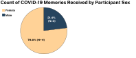

Discussion
A total of 25 people were recruited via postings on mailing lists through Pratt Institute and other professional organizations I belong to, social media (Instagram and Twitter), word of mouth, and flyers posted in my neighborhood. Of these recruits, 14 people participated and confidentially volunteered their memories in the survey.
Participant Age
The majority of the study's participants (N=11, 78.6%) were between the ages of 25-40 years old. The
rest of the participants fell into two groups: one representative of the 18-24 year olds (N=1,
7.14%), and two (N=2, 14.29%) representatives of the 41-50 year old demographic.
Participant Sex

That the majority of the participants (N=11, 78.6%) were female is not surprising for a study of
this kind. Recent
news articles have been devoted to the fact that women have struggled the most
during the pandemic.
Location of Memory
Thought most (N=11, 78.6%) of the participants were located in the United States at the time of
their COVID-era memory, I was surprised to see the global reach an appeal of the study. The both the
Canadian and Filipino participants found out about this study through my Instagram account.
Color, Themes, and Sentiment
What color hue was most popular?
Though none of the participants responded to having any known form of color deficiency, the most
selected hue by these participants (N=4, 28.6%) were shades of red, consisting of #CC0000 and #660000. This hue
represented both positive and negative sentiments. #CC0000 was
the
most popular and selected by three (N=3, 21.4%) participants who each recalled the shade with
positive themes of fun, inspiration, and enlightenment. While
#660000 was selected by one
(N=1, 7.1%) participant who described the shade as representing a negative themes of disbelief
and confusion.
Interestingly, the second most selected hue among the particpants (N=2, 14.3%) were shades of
blue,
consisting of #0066FF and #000066.
Though often this hue represents calm, liberty, and royality (Pastoureau, 2018), this survey
found that blue
represented negative sentiments
and themes of fear and anxiety. It is also interesting to note that Pantone's
color of the year
for 2020 was "Classic Blue" #004680. For 2020 perhaps,
this color
prediction/trend setting was a harbinger of bad tidings.
Themes and Sentiment
All of the themes in the participant's memories related to emotion. Nine (N=9, 64.3%) were
related to negative setniments. The themes of these negative sentiments included anger,
emptiness, stress, disbelief, and fear & anxiety. The hues for these themes included both bright
shades (reds, pinks, and orange) as well as darker shades of blue, purle, grey, and black. A
total of four (N=4, 28.6%) of the participant's memories were related to positive setniments.
The themes of these positive sentiments include fun, enlightenment, and inspiration. Only one
(N=1, 7.14%) participant's memory contained sentiment that was both negative and positive. This
particular memory described a day of meeting new people and fun activities and then the shock
from the World Health Organization's (WHO) declaration that the COVID-19 had become a pandemic.
As the survey collected the participant's memories over a period of two weeks in March 2021 (the
one year anniversary of the COVID-19 pandemic),it is possible that this anniversary influenced
the participant's responses. However, the anniversary of the pandemic also illustrates one of
four cluster dates of memories. These clusters include: pre-global stay at home orders (January
- 10 March 2020), the declaration of the COVID-19 pandemic by the WHO (11 March 2020),
observation of quarantine measures (12 March-28 May 2020), and the George Floyd protests (29-31
May 2020).
Concluding Thoughts
While this project was not able to draw solid conculsions, as a prototype, this project presents a means of gathering and assessing qualitative information which may not be readily apparent in traditional quantitative charts, such as a time-series line chart. The interpretation of qualitative data is usually left to the researcher through inferences, lab studies, and field studies (Holtzblatt and Jones, 1993).
Though based on an individual’s experience, long-term memory is an ally to one's comprehension of data visualizations because it is how one develops pattern recognition, general cognitive processing, and the rationalization of information (Knaflic, 2015).By examining the ways in which we encode emotional and experiential information (i.e. sentiment) through an aesthetical aspect like color, we start to examine the ways in which one individual is both unqiue and may possess similarties to another. The time of COVID has not only been a period of great loss of life, but also loss of cultural tradtions and ways of life, and to mark and remember this period with only points in a time-series chart is to diminish the significance of what it is to be human.
While far from perfect, the study highlights one of many ways in which qualitative data can be used to enhance the information provided by quantitative data. In particular, this method of data collection, analysis, and visualization combined with quantitative data represents a way to move beyond numbers and statistics. And in some respects, like Maya Lin's Vietnam Veterans War Memorial and Jer Thorp's 9/11 Memorial: Name Placement Algorithm, this visualization gives a virtual memorial to the lives of these fourteen individuals. In making these visualizations, I found that what is missing from them is the same thing that has been missing from our lives during the time of COVID-19--physical presence. Moving forward, I would like to figure out a way to transform this project into a physical object.